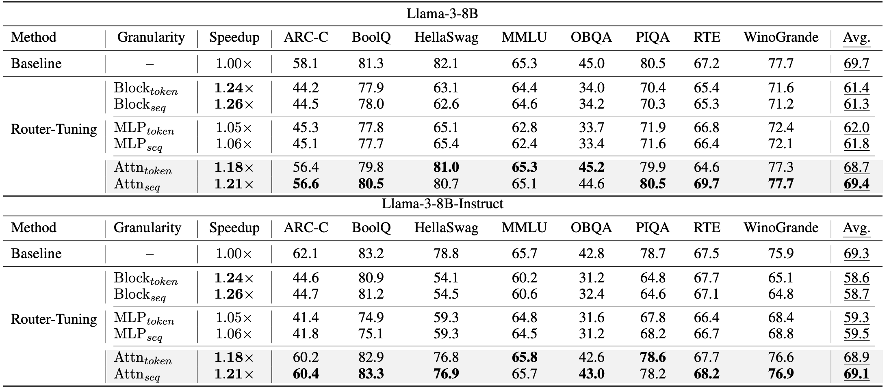
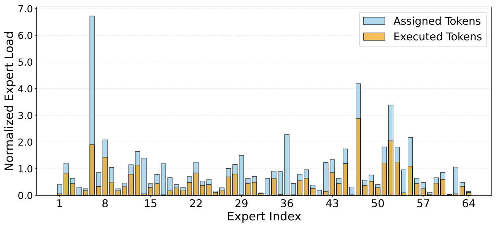

Introduction
This is the official implementation of Router-Tuning: A Simple and Effective Approach for Enabling Dynamic-Depth in Transformers, accepted at EMNLP 2025 (main conference). We provide a practical framework for efficient dynamic-depth training and inference in Transformers.
Router-Tuning enables dynamic-depth inference by fine-tuning only router-related parameters. Compared with standard full-model dynamic-depth tuning, it significantly reduces training cost while keeping model quality competitive.
News
Why Router-Tuning?
Traditional transformers execute a fixed number of layers for every token, wasting computation on easy tokens. Mixture of Depths (MoD) addresses this by dynamically skipping less important computations, but two practical issues remain:
High Training Cost
Existing methods usually tune the whole model, causing expensive full-parameter dynamic-depth adaptation.
Quality Degradation
Aggressive skipping can hurt quality if routing is not well calibrated, especially with higher compute budgets.
Router-Tuning tackles both: it focuses optimization on routing components and introduces routing strategies that better preserve performance-efficiency tradeoffs.
Core Method
1 · Router-Only Fine-Tuning
Tune only router-related parameters instead of full-model updates.
The backbone weights remain frozen, dramatically reducing optimization cost for dynamic-depth adaptation — making it practical for models already fine-tuned on downstream tasks.
2 · Attention-Based Dynamic Depth
Uses attention-based routing granularity (attn_token, attn_sequence) to improve compute and memory efficiency.
Preserves output quality under dynamic-depth execution while enabling flexible deployment at different compute budgets.
Results
Router-Tuning consistently improves the efficiency-quality tradeoff over full-parameter dynamic-depth tuning baselines, while keeping routing behavior more stable and interpretable.
Main Benchmark Results
Router-Tuning reaches notable speedup while keeping quality degradation small — outperforming full-parameter dynamic-depth tuning baselines across all evaluated settings.

Expert Routing Analysis
Router specialization becomes clearer after tuning: the model learns more stable token-to-layer routing patterns, enabling dynamic-depth execution with lower unnecessary computation.

LoRA Compatibility
Router-Tuning composes naturally with LoRA-based adaptation, enabling lightweight deployment recipes without full-model retraining.

Repository Layout
Quick Start
conda create -n router-tuning python=3.10 -y
conda activate router-tuning
git clone https://github.com/CASE-Lab-UMD/\
Router-Tuning-Mixture-of-Depths.git
cd Router-Tuning-Mixture-of-Depths
pip install -r requirements.txtvicuna_sharegptevol_instructslim_orcameta_math_qaevol_code_alpacaalpaca
python entrypoints/data/reformat_datasets.py \
--raw_data_root ./data/raw \
--save_path ./data/reformatted
python entrypoints/data/mix_datasets.py \
--reformatted_dir ./data/reformatted \
--save_path ./data/mixedbash scripts/finetune_router_tuning.sh# Hugging Face model + multi-GPU
MODEL_NAME_OR_PATH="Qwen/Qwen2.5-7B" \
RUN_NAME="qwen2.5-7b" \
NUM_PROCESSES=4 PORT=29501 \
bash scripts/finetune_router_tuning.shTraining Knobs
All fields below are set via environment variables or directly in finetune_router_tuning.sh.
| Parameter | Description |
|---|---|
| model_name_or_path | Hugging Face model ID (preferred) or local model path |
| run_name | Output folder alias; defaults to basename(model_name_or_path) |
| trust_remote_code | Defaults to False; enable only for architectures that require it |
| data_type | One dataset under data/reformatted/ or use mixed |
| max_train_samples | Training subset size for quick experiments |
| router_layers | Number of deeper layers enabled for router tuning |
| target_capacity | Optional target activation ratio for router regularization |
| granularity | attn_sequence · attn_token · mlp_sequence · mlp_token · block_sequence · block_token |
| router_only | Enable router-only training (default True) |
| learning_rate | Optimizer learning rate |
| weight_decay | L2 regularization coefficient |
| num_epochs | Number of training epochs |
| NUM_PROCESSES | Number of GPU processes for distributed launch |
| PORT | Distributed master port |
Evaluation
Evaluation is compatible with EleutherAI / lm-evaluation-harness. For strict reproduction used in earlier experiments, see s1ghhh / lm-evaluation-harness.
Repro Checklist
- Python 3.10 environment with
pip install -r requirements.txtcompleted successfully. - Valid
model_name_or_path: preferably a Hugging Face model ID or a normal local model path. - Reformatted/mixed data exists at
data/reformatted/*/data.jsonlordata/mixed/data.jsonl. accelerateconfig selected inscripts/finetune_router_tuning.shmatches your hardware.NUM_PROCESSESand GPU memory are consistent withmax_seq_lengthand batch setup.
Citation
@misc{he2024routertuningsimpleeffectiveapproach,
title = {Router-Tuning: A Simple and Effective Approach
for Enabling Dynamic-Depth in Transformers},
author = {Shwai He and Tao Ge and Guoheng Sun and
Bowei Tian and Xiaoyang Wang and Dong Yu},
year = {2024},
eprint = {2410.13184},
archivePrefix = {arXiv},
primaryClass = {cs.CL},
url = {https://arxiv.org/abs/2410.13184}
}